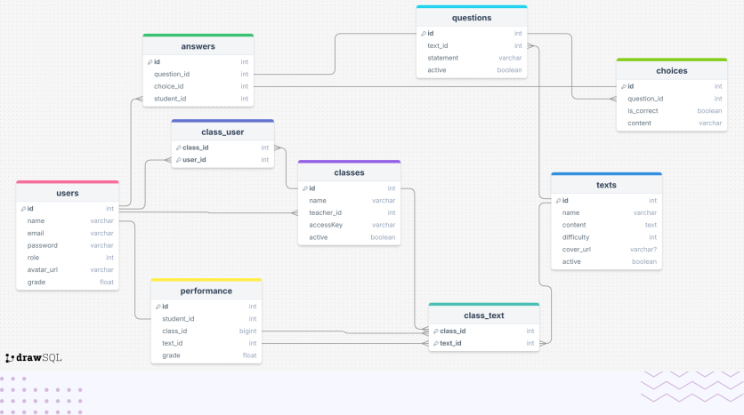

Banco de dados
Modelo Relacional
O modelo relacional é uma abordagem para gerenciar dados que organiza as informações em tabelas (ou relações), compostas por colunas e linhas. Cada tabela representa uma entidade única, enquanto as colunas representam atributos dessa entidade. O modelo relacional garante integridade e consistência dos dados, utilizando chaves primárias e estrangeiras para relacionar as tabelas de forma lógica e estruturada.
